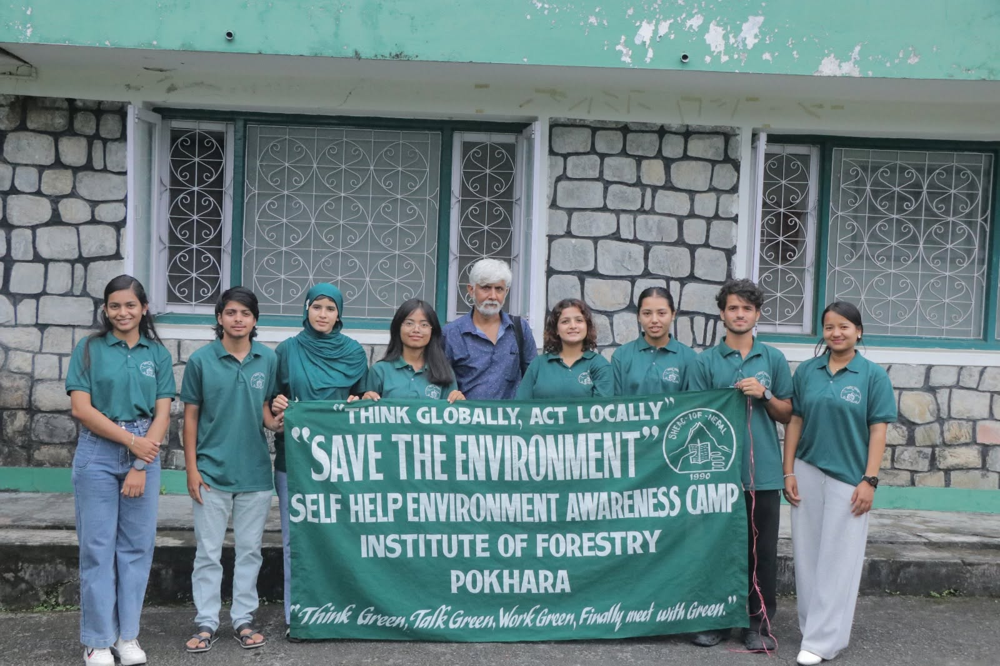

Biodiversity Conservation
Protecting biodiversity and supporting ecosystem-level conservation actions through research, education, and community participation.

स्वंयसेवी वातावरण जागरण समूह (SHEAC)
A youth-led initiative based in Pokhara, Nepal, dedicated to biodiversity conservation, wildlife research, plant studies, bird monitoring, and sustainable community action.
Self Help Environment Awareness Camp (SHEAC) is an active, youth-driven environmental organization based in Pokhara, Kaski, Nepal.
Founded by forestry students and conservation enthusiasts, SHEAC connects scientific field research, ecological education, biodiversity monitoring, and grassroots youth participation.
Operating under our steadfast ethos, "Think Globally, Act Locally" , we encourage local communities, students, and young researchers to take proactive responsibility for natural ecosystems.
Learn More About SHEACस्वंयसेवी वातावरण जागरण समूह
Pokhara, NepalDedicated pathways driving ecological stability, biodiversity conservation, research, and environmental education.
Protecting biodiversity and supporting ecosystem-level conservation actions through research, education, and community participation.
Promoting wildlife protection, field research, public awareness, and human-wildlife coexistence.
Supporting bird surveys, monitoring, bird conservation awareness, and avian research.
Supporting plant identification, botanical learning, butterfly research, and biodiversity documentation.
Organizing environmental education, youth activities, community campaigns, and awareness initiatives.
Encouraging field research, student learning, scientific documentation, and knowledge sharing.
Whether through field volunteering, academic research, institutional collaboration, or community membership, your contribution can support environmental and biodiversity conservation.